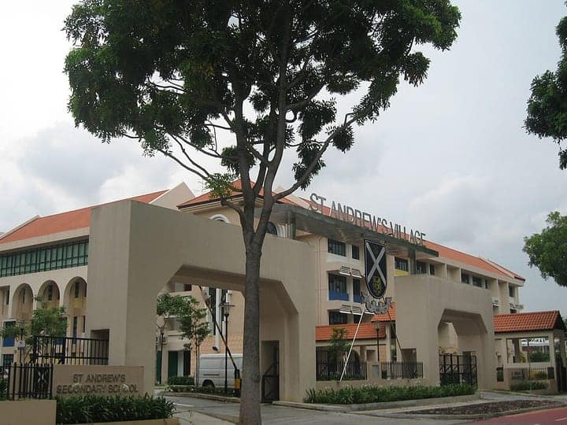

Singapore
Potong Pasir & MacPherson
a town of Singapore — sights & hawker food, sourced
60 places · 1 area · every one sourced, pinned and status-checked · last checked . Ordered by tier, then by number of named sources. How we choose
chicken rice · laksa · Potong Pasir Sloping-Roof HDB

Start with
Potong Pasir & MacPherson
a town of Singapore — sights & hawker food, sourced
60 places picked by 33 sources

Potong Pasir & MacPherson 60 places · area 1 of 1
-
1 Must see within Potong Pasir & MacPherson · Wok noodles
The Fishball Story
Young hawkerpreneur Douglas Ng rebuilt his grandmother's recipe into a hawker-fame story — soft, bouncy fishballs made from pure yellowtail with no added flour that won a Michelin Bib Gourmand in 2016; after stints at Golden Mile and Timbre+, the stall settled at Blk 77 Circuit Road in MacPherson.
77 Circuit Road, #01-450, MacPherson, Singapore 370077
Recommended by , , +1,
-
2 Must see within Potong Pasir & MacPherson · Cafés & modern
Style Palate
ITE culinary grads Darryl and Shi Long bring affordable European dining to a hawker stall — their best-selling duck confit (S$12) is a fork-tender leg on fluffy mash in a moat of rich house sauce, plus truffle pasta — a headline act of the new Woodleigh Village Hawker Centre.
Woodleigh Village Hawker Centre, #01-30, 202C Woodleigh Link, Singapore 360202
Recommended by , , +1,
-
3 Must see within Potong Pasir & MacPherson
Potong Pasir Sloping-Roof HDB (Blk 101-142)
Completed 1984, these steep red-pitched roofs are Singapore's most visually distinctive HDB silhouette — a mid-1980s experiment in postmodern public housing that borrowed the Malay kampong-house form to break from the usual slab blocks. Top-floor units get soaring 5-5.5 m ceilings, and Block 142's 'welcome' sign has become the emblem of the whole estate.
Look for Public estate; view from ground level
Potong Pasir Avenue 1 / Avenue 2 (Blk 101-142), Singapore
Recommended by , ,
-
4 Must see within Potong Pasir & MacPherson
Bidadari Park & Alkaff Lake
A 13-hectare urban park opened 3 September 2024 on the former Bidadari burial grounds, centred on Alkaff Lake — a stormwater-retention pond inspired by the colonial-era Alkaff Lake Gardens — with a 700 m Heritage Walk. Developed jointly by HDB, NParks, PUB and the National Heritage Board as the green heart of the new Bidadari estate.
Look for Open daily, free
11 Bidadari Park Drive (opposite Woodleigh MRT), Singapore
Recommended by , ,
Photo: M. Adrian Jurhami · CC BY 4.0 · Wikimedia Commons (resized) 5 Must see within Potong Pasir & MacPherson
Alkaff Upper Serangoon Mosque
Built in 1932 by Syed Abdul Rahman Alkaff of the prominent Hadhrami-Arab merchant family, this small mosque on the Potong Pasir/Bidadari edge is distinguished by a pencil-thin Ottoman-style minaret unlike any other in Singapore. Restored in 2014 and gazetted the same year as Singapore's 68th National Monument.
Look for Free; observe mosque etiquette
66 Pheng Geck Avenue, Singapore 348261
Recommended by , ,
-
6 Must see within Potong Pasir & MacPherson · Hawker & zi char
Old Fisherman (老渔翁)
Opened by former local actor Huang Yiliang, this humble evening-only stall cooks each bowl of crab bee hoon to order, drawing out a deeply sweet seafood broth — with a steamed fish and homemade omelette that regulars rate just as highly. A cult name of the renovated Circuit Road hawker centre.
Circuit Road Market & Food Centre, #01-29, 79A Circuit Road, Singapore 371079
Recommended by ,
-
7 Must see within Potong Pasir & MacPherson · Wok noodles
River South (Hoe Nam) Prawn Noodle
A Potong Pasir prawn-noodle institution first established in 1971 and now second-generation, named for the ancestral province of founder Png Kim Soon. The broth is built from fried prawn shells and pork ribs simmered eight hours, served across a sprawling 20-dish menu of prawn, pork rib, intestine, baby abalone and clam combinations.
1 Tai Thong Crescent, Singapore 347834
Recommended by ,
-
8 Worth the detour within Potong Pasir & MacPherson
Sri Siva Durga Temple
A Hindu temple to Shiva and the goddess Durga, first erected in 1906 near the Lavender Street / Rumah Miskin junction and shifted three times — via Beatty Road — before settling in Potong Pasir in 1982. Demolished in 2014 for water-leakage and space problems and rebuilt in Dravidian style at a cost of S$2.7 million, it was reconsecrated on 4 December 2016, with chambers for Ganesha, Murugan, Shiva, Durga, Lakshmi and Saraswati.
Look for Free; observe temple etiquette
8 Potong Pasir Avenue 2, Singapore 358362
Recommended by , ,
-
9 Worth the detour within Potong Pasir & MacPherson
Sri Manmatha Karuneshvarar Temple
A Hindu temple to Shiva (as Manmatha Karuneshvarar) established in 1888 on the Potong Pasir/Kallang edge, begun by Hindu workers of the nearby colonial gasworks who installed the deity for protection — hence its nickname the 'Kallang Gasworks Sivan Temple'. Rebuilt in 1934 on a 1909 government land grant.
Look for Free; observe temple etiquette
91 Kallang Road, Singapore 208804
Recommended by ,
-
10 Worth the detour within Potong Pasir & MacPherson
Sennett Estate
Once dubbed Singapore's largest planned housing development, Sennett Estate was built out through the 1950s (completed 1955) by the Sennett Realty and Tan Chong Land companies on land that had been Alkaff's leisure garden in the 1920s. Today a quiet, leafy middle-class landed enclave of terraces and bungalows ringed by the Potong Pasir and MacPherson HDB towns.
Look for Private residential estate
Jalan Wangi / Sennett Road (bounded by Upper Serangoon Rd & MacPherson Rd), Singapore
Recommended by , ,
-
11 Worth the detour within Potong Pasir & MacPherson
Istana Bidadari (former royal palace site)
The estate and the whole Bidadari district take their name from this vanished palace. British engineer Henry Minchin Simons acquired the 45-acre grounds in 1855; Sultan Abu Bakar of Johor bought it in the 1860s and gifted it to his second wife, the Danish-born Sultana Zubaidah (Cecilia Catharina Lange) — its beauty likened to a 'bidadari' (Malay/Sanskrit for celestial nymph or angel). After Zubaidah moved to Johor the palace was rented out, then demolished in 1915; its name outlived it, passing to the cemetery and today's estate.
Look for Heritage site; no structure remains
Former palace site, Bidadari estate (off Upper Serangoon Road / Mount Vernon Road), Singapore
Recommended by , ,
-
12 Worth the detour within Potong Pasir & MacPherson · Wok noodles
Tian Seng Fried Prawn Mee
An old-school Hokkien mee (from S$4) simmered and fried in prawn-head and pork stock with egg, prawn, pork and yellow noodles, then left to stew so the strands soak up the umami — a repeatedly-listed Circuit Road favourite the food blogs queue for.
Circuit Road Market & Food Centre, #01-10, 79A Circuit Road, Singapore 371079
Recommended by , ,
-
13 Worth the detour within Potong Pasir & MacPherson · Hawker & zi char
Victor Veggie (Victor's Vegetarian Food)
Victor's vegetarian satay — grilled mock-meat skewers at around S$1 a stick — draws long lines from residents and non-vegetarians alike, alongside otah and a spread of meat-free hawker classics that regularly headline Circuit Road stall guides.
Circuit Road Market & Food Centre, #01-92, 79A Circuit Road, Singapore 371079
Recommended by , ,
-
14 Worth the detour within Potong Pasir & MacPherson · Wok noodles
Dancing Char Kway Teow
The uncle who dances to instrumental music as he fries — his char kway teow is cooked with less oil than most and can be topped with a soft-boiled egg or omelette (about S$5), a Circuit Road performance-and-plate that the SPH food titles keep naming.
Circuit Road Market & Food Centre, #01-19, 79 Circuit Road, Singapore 370079
Recommended by , ,
-
15 Worth the detour within Potong Pasir & MacPherson · Indian & roti prata
Julaiha Muslim Restaurant
A family-run 24-hour Indian-Muslim diner on MacPherson Road since 1998 and a go-to supper spot — famed for prata that comes out crispy on the outside yet slightly doughy within, plus a well-loved mutton nasi biryani (~S$7) and proper mutton soup for the night-shift crowd.
538 MacPherson Road, Singapore 368222
Recommended by , ,
-
16 Worth the detour within Potong Pasir & MacPherson · Hawker & zi char
Taste of Home (家乡味)
An ex-Hyatt manager's stall cooking authentic Seremban, Malaysia dishes — springy cuttlefish bee hoon (lai fen) with sweet sauce and a rich pork curry. After its beloved hole-in-the-wall Potong Pasir Ave 3 coffeeshop closed in March 2024, it reopened bigger and air-conditioned at The Commerze @ Irving in Sept 2024, on the MacPherson/Tai Seng edge.
The Commerze @ Irving, 1 Irving Place, Singapore 369546
Recommended by , ,
-
17 Worth the detour within Potong Pasir & MacPherson
Guan Kee Kway Chap
A legendary kway chap name dating to the 1980s, now with a Woodleigh Village outlet — a set from S$5 gets broad rice sheets in braised gravy with expertly done pork belly, big and small intestine, tau pok and more.
Woodleigh Village Hawker Centre, 202C Woodleigh Link, Singapore 360202
Recommended by , ,
-
18 Worth the detour within Potong Pasir & MacPherson · Hawker & zi char
Eng Kee Chicken Wings
An outlet of the famed fried-chicken-wing name some rate the best in Singapore — light, crackly skin over juicy meat — one of the established brands that anchored the new Woodleigh Village Hawker Centre when it opened in Sept 2024.
Woodleigh Village Hawker Centre, #01-18, 202C Woodleigh Link, Singapore 360202
Recommended by , ,
-
19 Worth the detour within Potong Pasir & MacPherson · Wok noodles
No.10 Noodle House
One of the last hawker stalls in Singapore still selling noodles from S$2.50 — old-school bak chor mee and fishball noodles tossed in chilli-and-mushroom sauce with handmade wontons. The senior couple, at Circuit Road since 2006 (the name comes from stall no.10 at NUS Engineering's canteen), keep the price down for the neighbourhood's elderly; Mothership profiled their refusal to raise it.
80 Circuit Road, #02-10, Block 80 Market & Food Centre, Singapore 370080
Recommended by , ,
-
20 Worth the detour within Potong Pasir & MacPherson
Yong Lai Fa Ji Shu Shi
A Circuit Road fish-soup stall rated by veteran bloggers as on par with the famous Amoy Street bowl — fresh, bouncy fish in a robust broth simmered from fish bones and chicken for at least eight hours, with the fried sole-fish (ti poh) and ikan bilis made in-house. Fish soup around S$4.
Circuit Road Market & Food Centre, #01-66, 79/79A Circuit Road, Singapore 370079
Recommended by , ,
-
21 Worth the detour within Potong Pasir & MacPherson · Thai
Omar's Halal Thai Beef Noodles
A hidden-gem halal Thai beef-noodle stall at Circuit Road — the signature bowl (S$6) piles three forms of beef over kangkong and bean sprouts in a light, clear yet beefy broth (free refills) simmered at least three hours, fragrant with cloves and fried garlic. Reviewed by all three of the major SG food titles.
Circuit Road Market & Food Centre, #01-54, 79 Circuit Road, Singapore 370079
Recommended by , ,
-
22 Worth the detour within Potong Pasir & MacPherson · Cafés & modern
Folk Yard
Young owner Shan Chew's under-the-radar Potong Pasir sandwich cafe, drawing foodies island-wide for a tight menu of hefty sandwiches (the Breakfast Sandwich with candied bacon; a juicy Wagyu patty melt), sourdough and sustainable specialty coffee — with pizzas after 6pm. A Time Out and Eatbook favourite of the estate.
The Poiz Centre, 51 Upper Serangoon Road, Singapore 347697
Recommended by , ,

Photo: Terence Ong · CC BY 2.5 · Wikimedia Commons (resized) 23 Worth the detour within Potong Pasir & MacPherson
St Andrew's Village
A 13.5-hectare Anglican mission-school complex opened in 2006, straddling the Kallang River on the Potong Pasir/Woodsville banks and linking St Andrew's Junior, Secondary and Junior College — descendants of the St Andrew's Church Mission School founded in 1862 — across the Jacob Ballas Bridge.
Look for School campus; grounds viewable
15 Francis Thomas Drive, Singapore 359342
Recommended by ,
-
24 Worth the detour within Potong Pasir & MacPherson
Lorong Koo Chye Sheng Hong Temple
A prominent Taoist temple near MacPherson MRT dedicated to the City God (Cheng Huang Ye), the Sheng Hong deity whose spirit was brought from Anxi, China. Rooted in the old Kampong Koo Chye, it relocated to Arumugam Road in the 1980s when the area was redeveloped for industry and is now a large temple-and-charity association drawing crowds for prosperity and good-fortune prayers.
Look for Free; open daily
15 Arumugam Road, Singapore 409960
Recommended by
How we choose
Every place is recommended by named sources (review-aggregator star ratings never count as the recommender), pinned to its door from a published coordinate, and status-checked. Closed places stay, flagged, so you know they’re gone.
- Must see
- The places to plan a visit around — graded within each area, not across the city.
- Worth the detour
- Strong picks, worth going out of your way for.
- Deep cut
- For the curious: smaller, odder, more local.
Within each area, places are ordered by tier, then by number of named sources — never by popularity. We don’t add ratings, prices or opening hours of our own. Any quoted in a write-up are the source’s, dated.
Follow changes — an RSS feed of every closure and status check in this guide, for any feed reader.
15 sights and 45 places to eat in Potong Pasir & MacPherson, a town of Singapore, each traceable to the source that named it (Michelin, local news & vetted local/viral creators). Renders in soft pastel, light or dark.
Take Potong Pasir & MacPherson with you
Every place, its sources, the Guidebook and the photos at a small size. Map tiles are not saved: offline, the map shows our own pin schematic and every place stays listed.